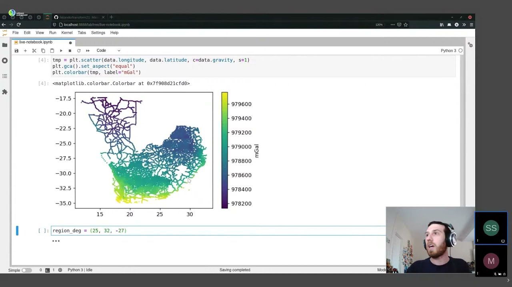
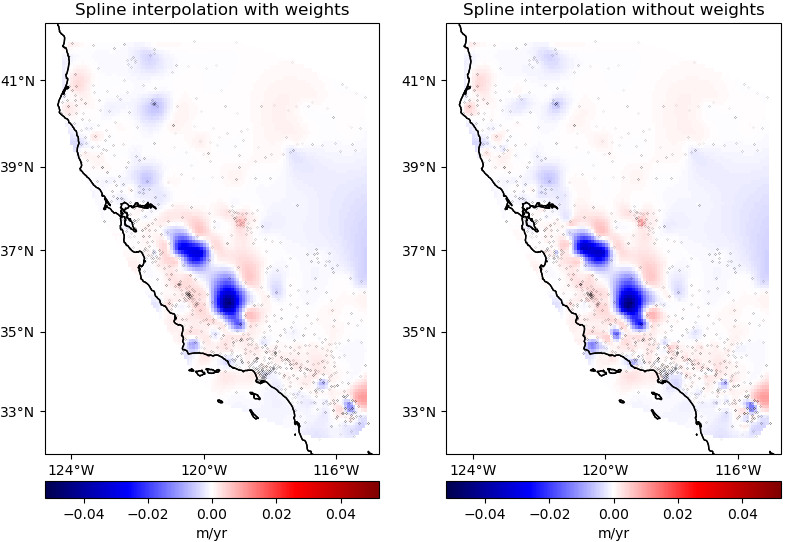
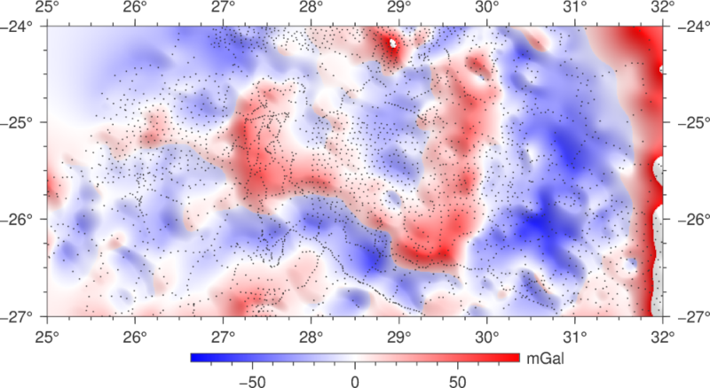
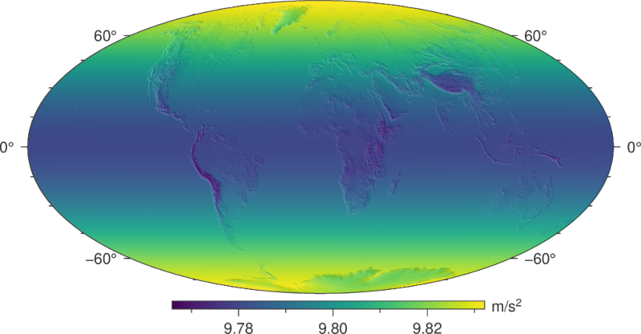
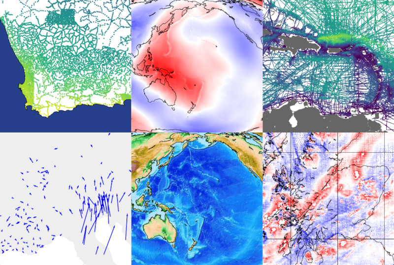
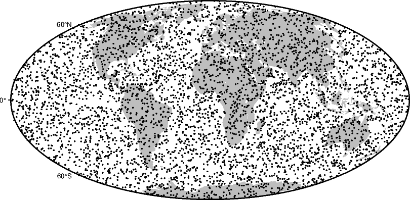

Fatiando a Terra
An open toolbox for the Geosciences.
Fatiando provides Python libraries for data processing, modeling, and inversion across the Geosciences.
It is built by a community of geoscientists and software developers with a passion for well-designed tools and helping our peers.
All of our software is free and open-source.
Getting started
Want to learn about our software? The best place to learn about each of our software libraries is their documentation. The docs always contain the most up-to-date information. See links to each project below.
New to Python? Take the Software Carpentry lessons (online or in-person) to learn the basics. There are more lessons than just Python and everything they teach is definitely work learning!
Rather watch a tutorial? Our YouTube channel has video tutorials about some of our tools. The tutorials are always accompanied by code but they can get outdated over time.

Meet our libraries
Verde: Gridding, machine learning style
Verde offers spatial data processing and interpolation (gridding) with a sprinkling of machine learning.
- Stable and ready for use
- Code: fatiando/verde
- Docs: fatiando.org/verde
- Latest version: PyPI, conda-forge
- doi: 10.21105/joss.00957

Pooch: Easily download datasets
Pooch is the easiest way to download data files to your computer. It is used to manage sample data downloads not only by our own tools but also other popular Scientific Python libraries: scikit-image, SciPy, MetPy, xarray, SHTOOLS, satpy, icepack, histolab, yt, napari, and more.
- Stable and ready for use
- Code: fatiando/pooch
- Docs: fatiando.org/pooch
- Latest version: PyPI, conda-forge
- doi: 10.21105/joss.01943
import pooch
import xarray as xr
# The Digital Object Identifier of the data
doi = "10.6084/m9.figshare.13643837"
# Known MD5 checksum (from figshare)
checksum = "md5:16c94a792003714efee2bdb4f3181d3a"
# Download the netCDF file and check integrity
fname = pooch.retrieve(
url=f"doi:{doi}/australia-ground-gravity.nc",
known_hash=checksum,
)
# fname is the path to the file
data = xr.load_dataset(fname)
Harmonica: All things potential fields
Harmonica is our library for processing, forward modeling, and inversion of gravity and magnetic data. Our goal is to incentivise good practices by carefully designing the software and offering state-of-the-art methods with efficient implementations.
- Ready for use but still changing
- Code: fatiando/harmonica
- Docs: fatiando.org/harmonica
- Latest version: PyPI, conda-forge
- doi: 10.5281/zenodo.3628741

Boule: Ellipsoids and normal gravity
Boule defines reference ellipsoids for coordinate conversions and calculating normal gravity of the Earth and other planetary bodies (Moon, Mars, Venus, Mercury, and more).
- Ready for use but still changing
- Code: fatiando/boule
- Docs: fatiando.org/boule
- Latest version: PyPI, conda-forge
- doi: 10.5281/zenodo.3530749

Ensaio: Practice datasets to probe your code
Ensaio makes it easy to download our open-access sample datasets. It taps into the Fatiando a Terra FAIR data collection which is designed for use in tutorials, documentation, and teaching.
- Ready for use but still changing
- Code: fatiando/ensaio
- Docs: fatiando.org/ensaio
- Latest version: PyPI, conda-forge
- doi: 10.5281/zenodo.5784202

Choclo: Kernel functions for geophysical models
Optimized numba-compatible forward modelling functions for gravity and magnetic fields, specially tailored to be reused by other libraries, like Harmonica, Magali, and SimPEG.
- Ready for use but still changing
- Code: fatiando/choclo
- Docs: fatiando.org/choclo
- Latest version: PyPI, conda-forge
- doi: 10.5281/zenodo.7851747
import choclo
# Define observation point
easting, northing, upward = 10.4e3, -5.6e3, 110.
# Define prism boundaries and physical properties
prism = [4e3, 12e3, -10e3, -2e3, -300., 20.]
magnetization = [1.2, -2.3, 1.0]
# Compute magnetic field of the prism
b_e, b_n, b_u = choclo.prism.magnetic_field(
easting, northing, upward, *prism, *magnetization
)
numba.jit function to speed it up.
Bordado: Create and split geographic coordinates
Bordado can generate coordinates for regular grids and meshes, split points based on spatial blocks and rolling windows, and perform other operations on spatially distributed points.
- Ready for use but still changing
- Code: fatiando/bordado
- Docs: fatiando.org/bordado
- Latest version: PyPI, conda-forge
- doi: 10.5281/zenodo.15051755

Interested?
We are always happy to welcome anyone who is interested in getting involved! Whether it be coding, teaching, designing, or just hanging out. Getting involved in open-source can be a great way to meet new people, improve your coding skills, and make an impact in your field.